AIRBNB raport
Natalia Kozlowska
10 10 2021

Introduction
If you like to travel and save some money at the same time, Airbnb is no stranger to you. For those who are at home and when they are leaving, they like to bask in luxury and at the same time not to count every cent spent, I will explain in a nutshell what the phenomenon of this application is.
The company itself was founded in 2008. Interestingly, it was created by two friends who, unfortunately, did not have enough money to rent their dream apartment on their own. That is why they decided to put a mattress in the living room and offer it as a place to stay to earn some extra money. So they set up the AirBed & Breakfast website (Airbedandbreakfast.com), which offered short-term accommodation with breakfast. The first customers started using the accommodation already in the summer of 2008 during the Industrial Design Conference, the participants of which had problems finding free accommodation in the city.
Airbnb is basically a company that offers short-term rental of rooms and apartments.
Currently, it has 3 million accommodation offers on its website in 65 thousand cities, in 191 countries! The services are provided only via the website, but the company also has 20 offices, incl. in Berlin, Barcelona and Beijing.
And ten years after it began operations, black clouds appeared over Airbnb, especially in North America. The mayor of New York wanted to sign a law that would prevent Airbnb platforms from legally operating in the city.
The act was intended to help city officials enforce the law that says it is not allowed to rent a flat for less than 30 days, unless the owner is also present at the time. In addition, the plan is to force landlords to inform the local authorities whether one room or the entire apartment is rented.
All this information should be updated monthly, and stored in an appropriate database, a database that we will analyze together! The database comes from the website [Kaggle] (https://www.kaggle.com/dgomonov/new-york-city-airbnb-open-data) and has all entries of Airbnb users from 28/03/2011 to 08/07/2019 and it is very extensive. It has as many as 22 unique values.
In my analysis, I would like to focus mainly on what could hypothetically affect the price of a New York apartment through the Airbnb website. Is it only the location that may affect the price or, for example, the type of apartment offered?
Are there strong correlations between some variables such as the number of views and the neighborhood in which the room / flat is located?
Finally, I would like to present models that will deal with the classification problem and predict apartment locations (Manhattan or other location) based on selected variables.
Feel free to analyze!
VARIABLE PRICE
First, let’s check the distribution of our main variable price.

In addition to the plot, I also calculated the skewness for this variable. It is 19.1183525. Both on the basis of the graph above and the calculated skew coefficient, which is positive, incidentally, we can conclude that our variable has a right-skewed distribution. This means that in all descriptive statistics for this variable we will use the median, not the mean.
However, this situation should not surprise us, because the distribution of the price variable in most of the data is usually right-angled.
Now let’s check what the correlation of some of our variables looks like in our data.

| term | price |
|---|---|
| latitude | 0.03 |
| longitude | -0.15 |
| min_nights | 0.04 |
| reviews_num | -0.05 |
| availability | 0.08 |
By looking at our correlation graph, we can see that our variables do not correlate as strongly as we would expect. However, when analyzing our results, we can come to three, not necessarily obvious, conclusions:
The variable price is negatively correlated (-0.15) with longitude, and minimally, positively correlated (0.03) with latitude,
Additionally, our variable is negatively correlated (-0.05) with the variable number of reviews. Which is quite an interesting coincidence, isn’t it?
The strongest, positive correlation (0.17) can be seen between the variables availabiry per year and number of reviews. However, this positive correlation should not shock us in any way.
Let us dwell a moment more on our correlations. I personally wonder why the * price * is negatively correlated with latitude and positive with longitude. It seems that now we can put forward a hypothesis that is unlikely to be very revealing. The price of renting an apartment through Airbnb depends, to a large extent, on its location. Visualizations always help us to understand our data accurately, so in this case we will also create a graph that will help us show these relationships.
I focused on the latitudes in the range -74.00 a 73.80.

NEW YORK DISTRICTS
Since we know that geographic location has a special impact on the price of renting an apartment, then let’s check what the price looks like if we were to analyze individual neighborhoods of New York. In which of them is the most offers? For example, do they have a similar distribution?
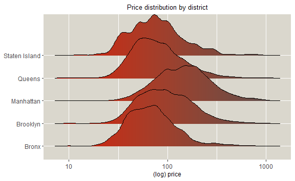
We will also note that most of the flats (over 85%) are located in two boroughs of New York, that is, Brooklyn and Manhattan.

Let’s look at the basic statistics for each district separately. Let us pay attention to the median prices among individual districts. As we can see, the Manhattan district is in the lead, and that’s a big advantage!
| neighbourhood_group | min | Q1 | median | Q3 | max |
|---|---|---|---|---|---|
| Bronx | 10 | 45 | 65 | 99 | 2500 |
| Brooklyn | 10 | 60 | 90 | 150 | 10000 |
| Manhattan | 10 | 95 | 150 | 220 | 10000 |
| Queens | 10 | 50 | 75 | 110 | 10000 |
| Staten Island | 13 | 50 | 75 | 110 | 5000 |
Charts and tables certainly help the recipients understand our data to a large extent. However, nothing appeals to them more than the graphics! To make my data even more expressive, I decided to use the map of New York to show some interesting relationships between the place and the rental price.
First, let’s see where all the available apartments are on the map.
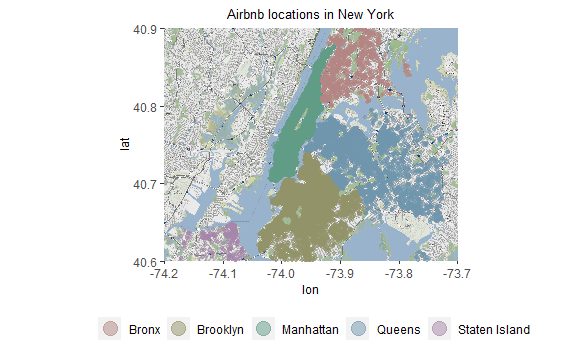
Below we have presented only those places where both the cheapest and the most expensive locations from the entire database are located.
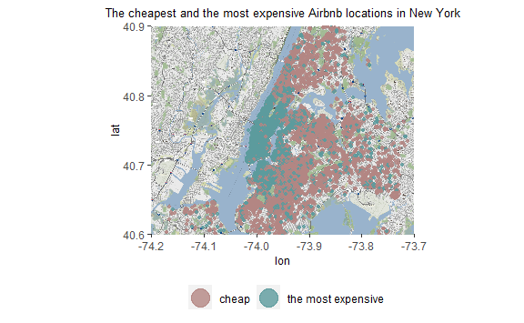

The maps of various locations in New York presented above may lead us to some very interesting thoughts. Namely:
It is certainly the Manhattan district that offers us the most expensive flats to rent, as we have already mentioned. The projection of the maps only confirmed our thesis.
Quite a lot of luxury flats are also in Brooklyn. We can observe a lot of apartments, especially near Metropolitan Ave.
It is interesting that quite close to the Kennedy airport there are quite a lot of cheap apartments for rent.
As it turns out, the most expensive district, Manhattan, also has a lot of cheap flats. There are 22 places to stay in this area, where we can pay only $ 25 for one night.
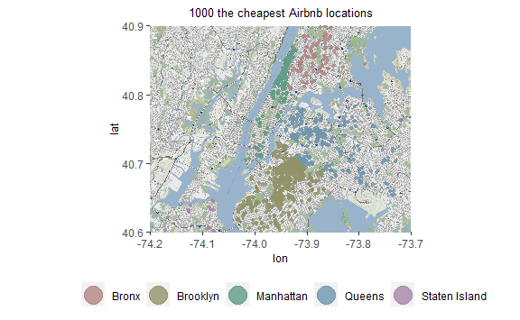
To finally see which of our 5 boroughs in New York have the most expensive flats to rent through the Airb app, I created a proportion graph.
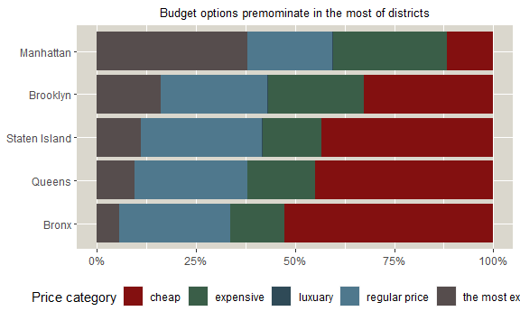
Let’s check how many luxury apartments (over $ 2,000) are located in each district separately.
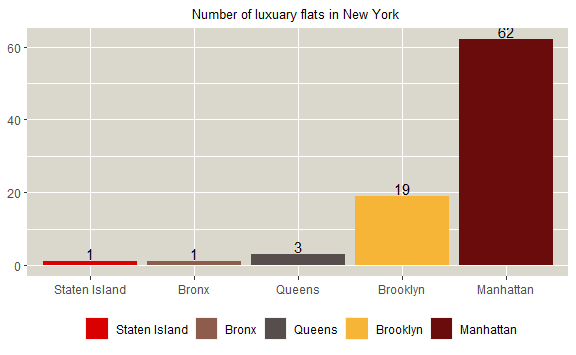
Let’s look at these charts for a moment and discuss all the interesting and significant conclusions that we can easily draw by analyzing the individual diagrams.
Our neighborhoods in New York City are very similar in structure. This means that most of them have the most cheap type accommodation up to 69 dollars, and the least are the most expensive type luxuary above 2001 dollars.
It seems that the Bronx is the cheapest of the five presented here.
TYPE OF THE OFFERED LOCUM
As we have already mentioned, this location mainly affects the price of a rented apartment in New York. This is of course true and it translates to other cities around the world. Location and location can significantly affect these costs. But let’s consider if this is the only factor. Could the price be influenced by anything else other than its location?
It turns out that another variable in our data set, i.e. the type of room. It is important to include this variable in our analysis, because it may turn out that there are districts that mainly offer shared housing and they are relatively cheap, compared to, for example, renting an entire apartment, the price of which may be even several times higher!
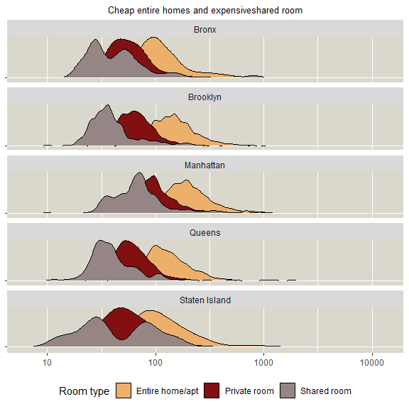
As we can see in our density graph, in each of our districts it is whole flats, apartments are the most expensive option. people who would like to save a bit should choose the option of sharing a room with other people.

Let’s check what the distribution of the * room type * variable looks like in each of our districts.

Analyzing the above chart, we can come to many interesting conclusions. First, most houses / apartments for rent are in the Manhattan area. This is probably one of the main reasons for the high prices in this region. By contrast, the most common rooms are located in the Bronx.
Bearing in mind the fact that the average price of a given type of room largely depends on the district and its location, I decided to create a heatmap that includes the price of each possible option for selecting a room type with its price.

Using the density graph we can see that some rates for shared rooms are higher than the prices for the whole house! Let’s check it carefully.

In fact, this rather bizarre situation is happening! Our two density graphs match. Awesome. Quite a lot of shared poles have a price higher than the cost of renting the whole house! Let’s check which offers exactly and where they are located. It might seem that now, if we followed the analysis closely, we can hypothesize that probably most of the shared rooms are located in the Manhattan district. Let’s check it out then.
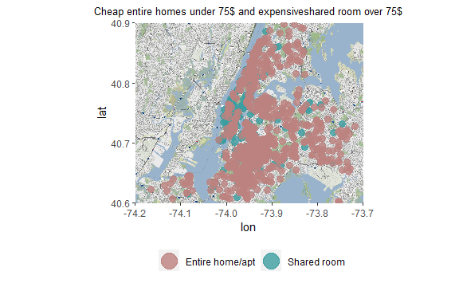
As expected, most of the shared rooms are in Manhattan or its vicinity.
We can find the most cheap homers / apartments in the Brooklyn area.
Interestingly, a lot of cheap houses can be found in the vicinity of J. Kennedy airport, which once again proves that in close proximity to the airport, you can spend the night cheaply. Remember, however, that the journey from the airport to the center of New York may take up to 1:30 h one way, with changes.
PRICE TREND
I would like to remind you that the offer from the Airbnb application from New York has data from 03/28/2011 to 07/08/2019. Due to the fact that we have specific dates, we are able to create a price trend depending on time using geom smooth charts. Thanks to this, we can certainly find out in which periods the prices of renting apartments increased and when they decreased.
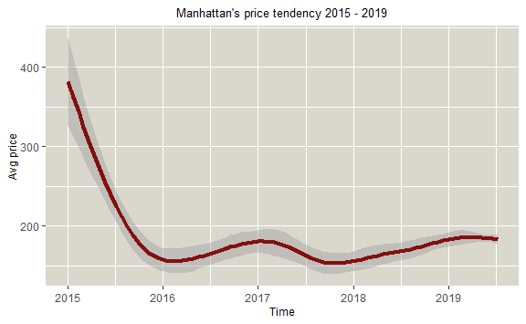
Have you also noticed this significant drop in prices between 2015 and 2016? Which could be the reason why in 2015 you rented a flat on average over USD 350, while a year later it was slightly over USD 150 (an average decrease of 233%!).
In order to answer this question, let us consider one point for a moment. Let us refer to the structure of the types of housing offered in Manhattan. The vast majority (60%) of all available locations on Airbnb in Manhattan are whole houses. However, the share of this type of flats before 2016 was over 80%. And this may have largely contributed to the fall in rental prices.
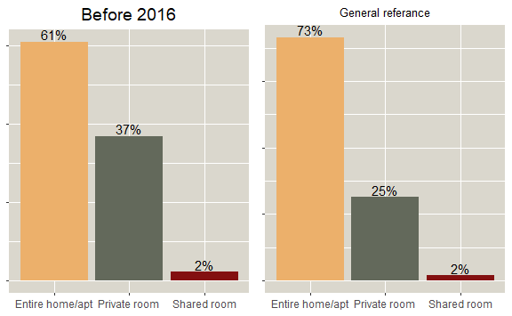
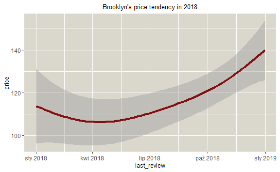
## mapping: xintercept = ~xintercept
## geom_vline: na.rm = FALSE
## stat_identity: na.rm = FALSE
## position_identity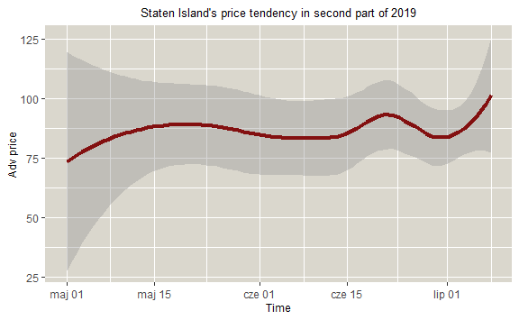
As can be seen in Staten Island, the price tends to increase. It is not violent, but it is definitely noticeable. The location is quite a distance from the very heart of New York City. The increasing price may be related to the considerable demand of tourists in the tourism industry and the desire to find accommodation, even apart from major tourist attractions.


CONCLUSIONS
First, let’s see if the upward trend of adding classifieds on Airbnb continued over this 8-year period?

As it turns out, the most expensive apartments (from 107 dollars to 175 dollars) appeared in 2013.

Another interesting piece of information that we can see when using bar charts is the fact that shared rooms appeared on Airb’s offer only in 2014. However, I would like to point out that their participation over these eight years was not significant.

MODELING - PRICE
I present the modeling results below. My dependent variable was price so the problem was predictive. As we can see, the best model turned out to be xgb with r square equal to 60.1
| model | RMSE | Rsquared | MAE |
|---|---|---|---|
| lm | 0.6910794 | 0.5136658 | 0.5067612 |
| knn | 0.7281242 | 0.4692074 | 0.5299179 |
| rpart | 0.6778720 | 0.5322039 | 0.4915119 |
| gbm | 0.6403175 | 0.5829531 | 0.4625280 |
| xgb | 0.6262782 | 0.6005643 | 0.4521198 |
MODELING - NEIGHBOURHOOD GROUP
As for the classification problem related to the New York neighborhoods. In this particular case, we can say that the three models showed similar results. I mean here random forest (ACC = 70.6), gradient boosting (ACC = 70.3) and eXtreme Gradient Boosting (70.8).
| model | Accuracy | Kappa |
|---|---|---|
| lm | 0.6807336 | 0.3403359 |
| knn | 0.6775293 | 0.3358800 |
| rpart | 0.6945050 | 0.3778610 |
| rforest | 0.7062994 | 0.4006375 |
| gbm | 0.7028225 | 0.3944352 |
| xgb | 0.7078675 | 0.4042060 |